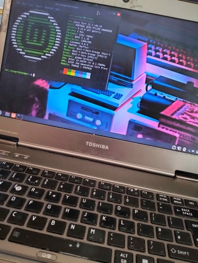

Toshiba Portage Z830 Upgrade

This is my ungoing project. I'm working on it since 2022. My goal is to make it an usable linux machene. Sine I've started, I swaped the batery and installed Mint distro. I plan to upgrade RAM and replace the fan because it's making loud noices. I also want to switch to Fedora distro. I love working on it because I can learn more about hardware and about diferent linux distros.
exploration
Tails is an secure operating system that took my attencion whihe serching on web for Linux distros. Whole OS runs on USB stick using only RAM. It gives you complete anonymity. It comes with preinstalled Tor browser that hides your identity through 3 diferent servers before connecting to actual internet. That means it's harder to detect where are you located. It's also good because Tails has something calld "amnesia". Basicaly every time you turn off computer all your history, setings and downloaded files vanish. You have persitant momory where you can encript files, aplications and setings that are sored securly on USB taht can be restored with password when booting Tails again. I also installed some penetration testing, social engineering and other hacking tools to the persistant storage and exlpored their basics.
TEXT 3
TEXT 4